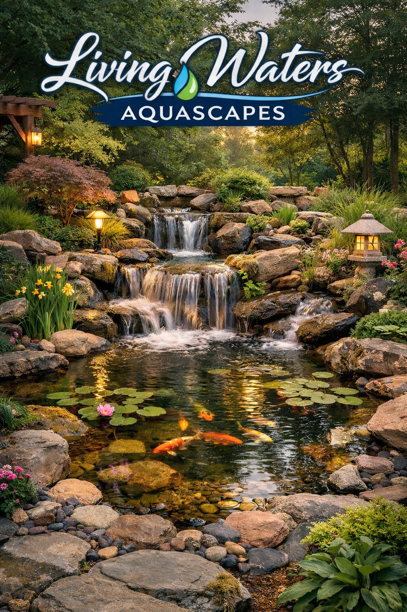
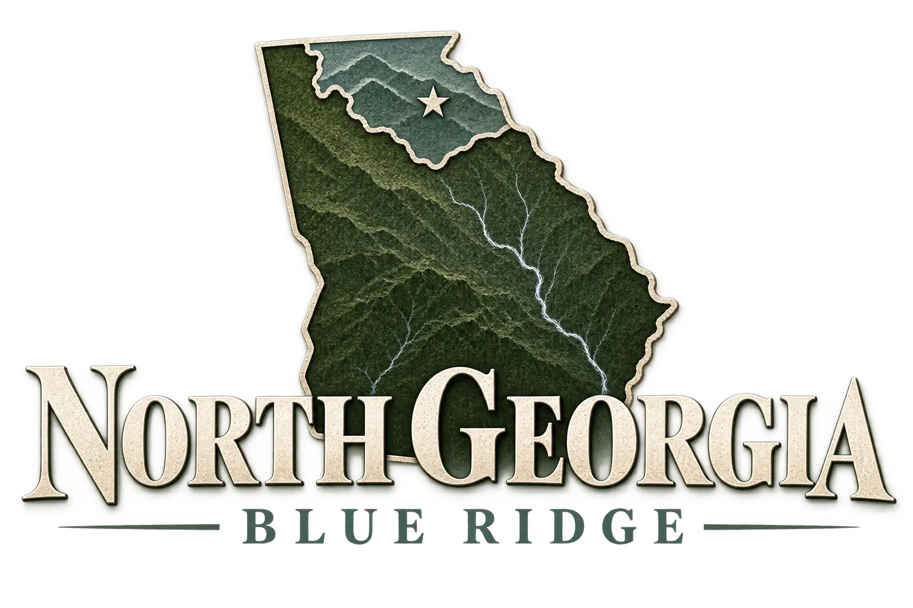

Start with a conversation
Tell Tyler about the space, what you have in mind, your general budget, and what you want the finished feature to feel like.

North Georgia • Blue Ridge
Handcrafted ponds, waterfalls, stonework, and water features designed to feel as though they have always belonged there.
Built Into the Landscape
A great water feature should not look installed. It should look discovered.
Living Waters Aquascapes combines natural stone, thoughtful water flow, and the character of the surrounding landscape to create spaces that feel established rather than added on.
From a quiet garden pond to a cascading waterfall beside a hot tub, every project begins with the place itself.
The Possibilities
These concept studies show the kinds of environments Living Waters can create. As completed-project photography grows, those projects can take their place here.
The Living Waters Approach
Water changes a space before you ever touch it.
The sound of a fall, the reflection of trees across a pond, and the way stone disappears into the landscape all matter. Living Waters approaches each project as part construction and part composition.
Stone and water arranged to complement the surrounding landscape.
Water movement considered for both appearance and sound.
Every project begins with the property rather than a template.
From Idea to Water
Tell Tyler about the space, what you have in mind, your general budget, and what you want the finished feature to feel like.
Placement, terrain, water movement, stone character, and practical constraints are considered before the build begins.
The stonework and water feature are built around the site rather than forcing the site around a generic design.
Flow, splash, and sound are adjusted until the finished feature looks and feels right in the space.
North Georgia • Blue Ridge
Living Waters Aquascapes serves homeowners and businesses throughout North Georgia and the Blue Ridge area.
Have a property outside the immediate area? Reach out with your location and project details to see whether it is a good fit.
Ask About Your Property
Have a Space in Mind?
Tell Tyler what you are imagining and where the project is located. A few photos of the space are a great place to start.
Start a Conversation
Call or text Tyler directly. If you already have photos of the property, send them along with the kind of feature you are considering.
Helpful things to include